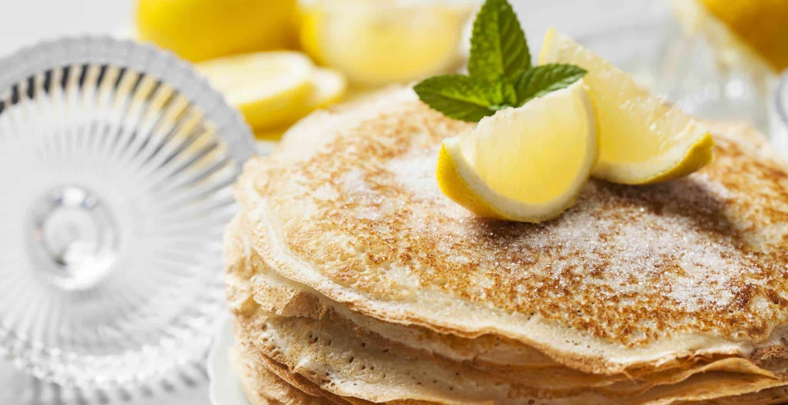

Pancake

Description
A pancake is a flat cake, often thin and round, prepared from a starch-based batter that may contain eggs, milk and butter.
Usually it is cooked on a hot surface such as a griddle or frying pan, often frying with oil or butter.
Ingredients
- 1 cup of flour
- 2 tablespoons of sugar
- 2 teaspoons of baking powder
- 1 teaspoon of salt
- 1 egg beaten
- 1 cup of milk
- 2 tablespoons of oil
Steps
- Put the flour and salt into a large bowl, make a well in the centre and pour in the milk and eggs. Give the liquid mixture a quick whisk before incorporating the flour. Continue to whisk until you have a smooth batter.
- Now add 1 tablespoon of vegetable oil and whisk thoroughly.
- Take a crêpe pan, or large frying pan, dip some kitchen paper in the oil and carefully wipe the inside of the pan. Heat the pan over a medium heat for 1 minute.
- Add just under a ladleful of batter to the pan and immediately start swirling it round the pan to get a nice even layer.
- Cook the pancake for 30–40 seconds. Use a palette knife to lift the pancake carefully to look at the underside to check it is golden brown before turning over. Cook the other side for approximately 30 to 40 seconds and transfer to a serving plate.